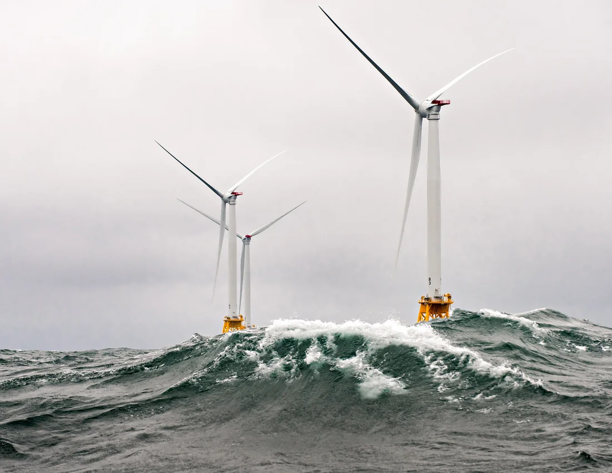

Engineering software
EngiWorld
We built 1,301 tasks across 26 professional applications to test whether agents can produce engineering files that meet the task requirements.
PhD student in Civil Engineering
My research in AI for Science focuses on how multimodal agents use engineering software and reason about space. I also build models to predict offshore wind turbine loads and indoor air quality.

Engineering software
We built 1,301 tasks across 26 professional applications to test whether agents can produce engineering files that meet the task requirements.

I co-designed the benchmark, ran model experiments and evaluated the engineering files produced at each stage.
I helped design the benchmark, ran experiments and evaluated how agents navigated and manipulated objects across eight simulated environments.
A model pretrained on 5 MW turbine simulations was transferred to 15 MW turbines. With 40% of the target-domain data, it matched an XGBoost baseline trained on 80%.
We model short-term changes in indoor CO₂ with graph-spectral increment diffusion to forecast concentration distributions across different locations.
We augmented high-temperature pull-out test data using a GAN, compared six regression models and used SHAP to interpret bond-strength predictions.
Geometric, reinforcement and material-strength constraints guide a neural network that predicts the flexural capacity of prestressed ultra-high-performance concrete beams.
No manuscripts are listed publicly in this category.
Engineering AI Research and Development Intern
Co-designed EngiWorld, ran model experiments and evaluated the files agents produced in professional engineering software.
Designed and tested software-development tasks for Micius-Flash, including a CAD hole-pattern plugin and a PySide6 implementation of Blender modeling workflows.
PhD student in Civil Engineering
Master’s in Civil Engineering
Bachelor’s in Civil Engineering